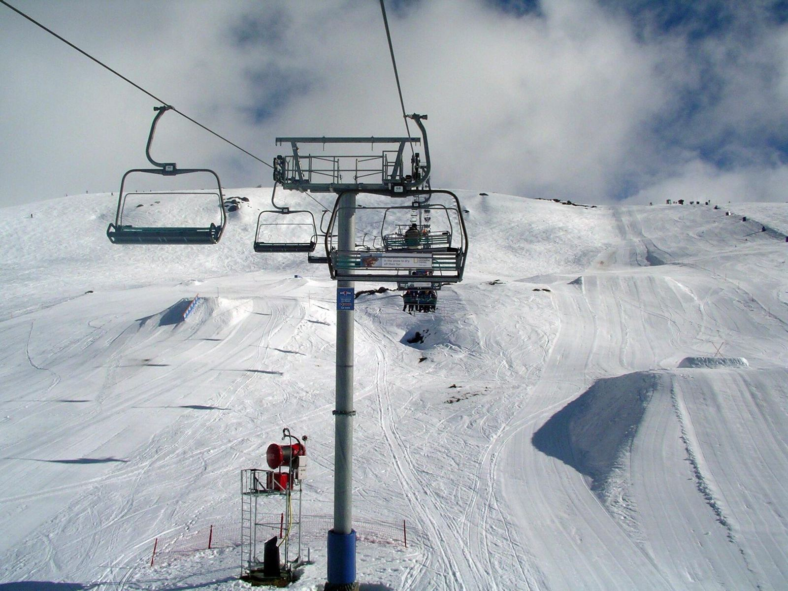
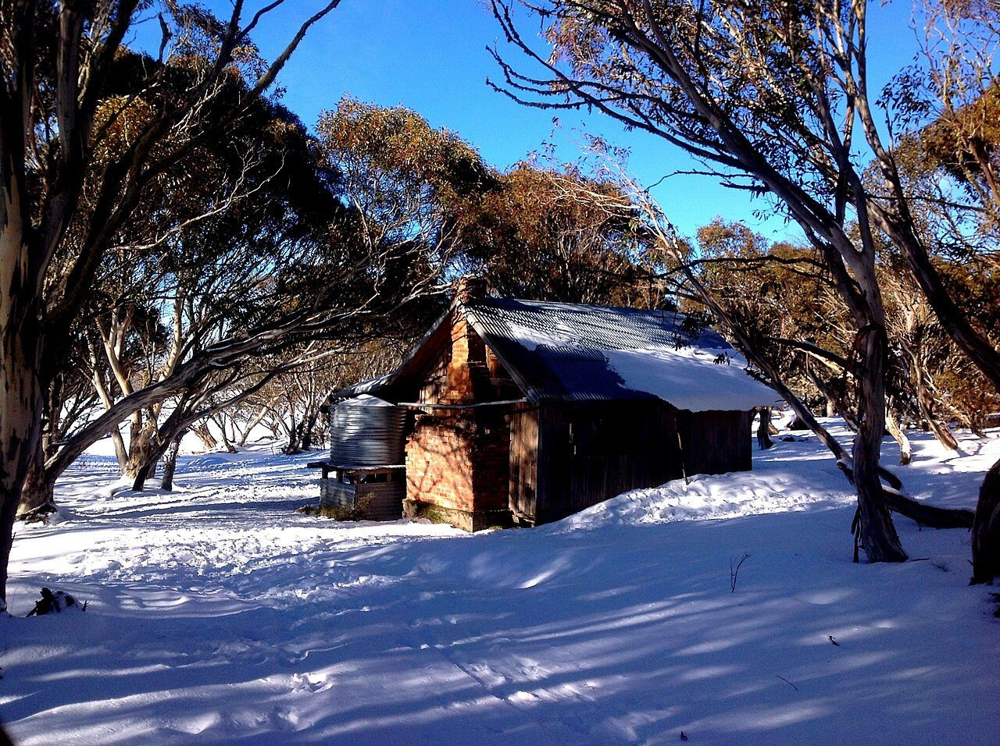
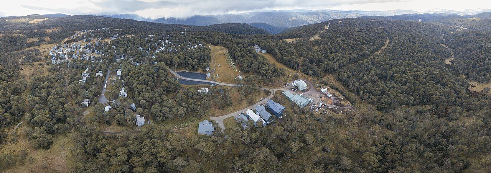

Mount Buffalo is our nearest snow, but on a ski day most guests head further up to Mount Hotham, Dinner Plain or Falls Creek. They come back down to a warm cottage, a quieter night and a lower rate than on the mountain.
Which mountain
- Mount Hotham is straight up the Great Alpine Road from our gate, through Bright and Harrietville. Chains must be carried from the start of the climb at Harrietville.
- Dinner Plain is a small alpine village about 10 km past Hotham, about an hour and ten minutes from Bright. It's quieter, with cross-country trails and snow play.
- Falls Creek is 59 km and about an hour and a half from Bright, over to Mount Beauty and then 30 km up the mountain.
- Mount Buffalo is the closest, about 40 minutes away, for tobogganing and snow play rather than skiing. See our Mount Buffalo guide.


Getting there from here
Turn towards Bright at our gate and keep going. Bright is 8 km away, so add a few minutes to the times above. Leave early on weekends and school holidays, when the mountain roads are busy, and allow extra time to fit chains if you're told to.
Every car must carry snow chains to Hotham and Falls Creek in the declared snow season, and you'll pay a resort entry fee for the car when you arrive. There's no chain hire on Mount Hotham, so hire them in Bright or on the way. Falls Creek only allows Diamond chains, so say where you're going when you hire.

Coming back
Hang wet jackets, gloves and boots in our ski drying room, and they'll be dry by morning. Every cottage is heated, with electric blankets on the beds, and Bright is 8 km away for dinner.

Useful links
- Mount Hotham: snow chains and road access
- Falls Creek: getting here in winter
- Dinner Plain: getting here
- Alpine Resorts Victoria, for season dates, resort entry and chain rules
Top photo: Jonti Hansen, CC BY 3.0, via Wikimedia Commons.